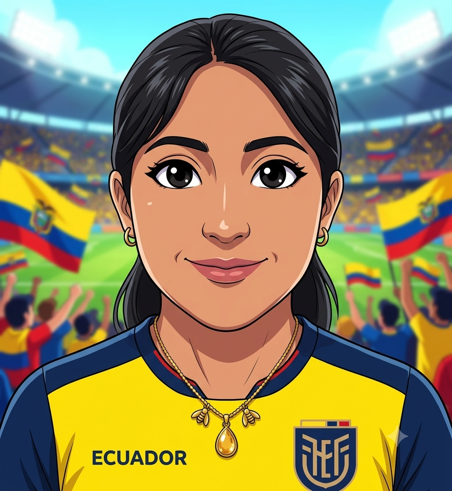
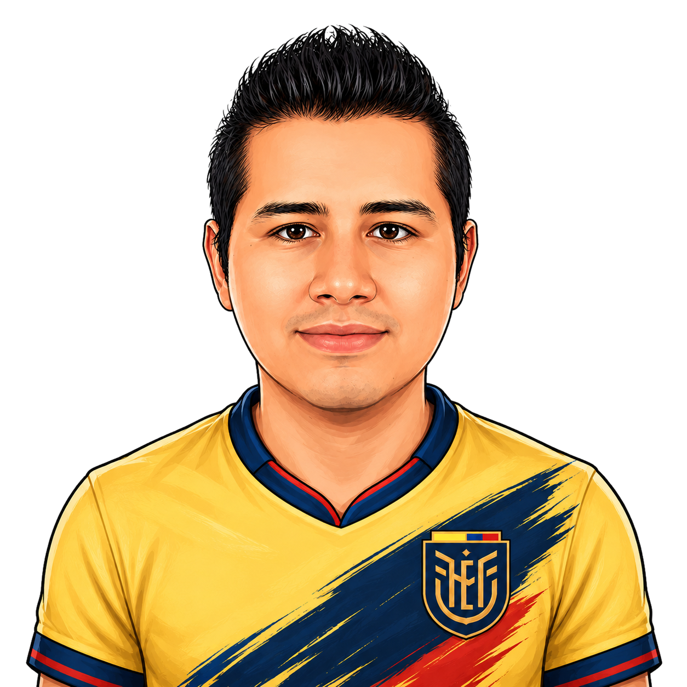
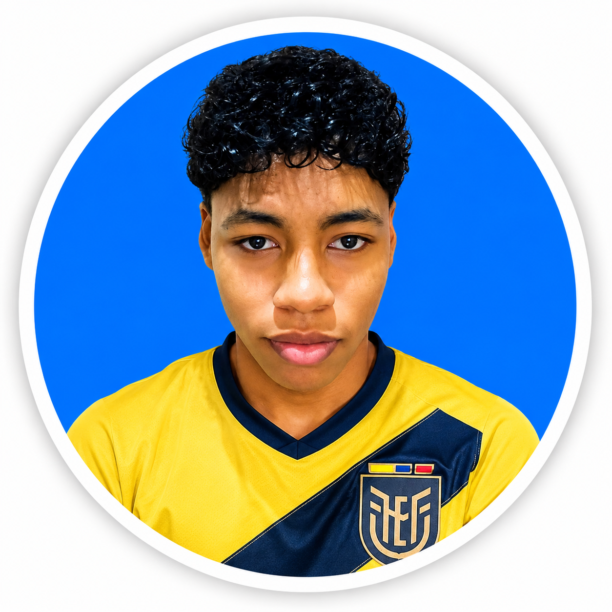
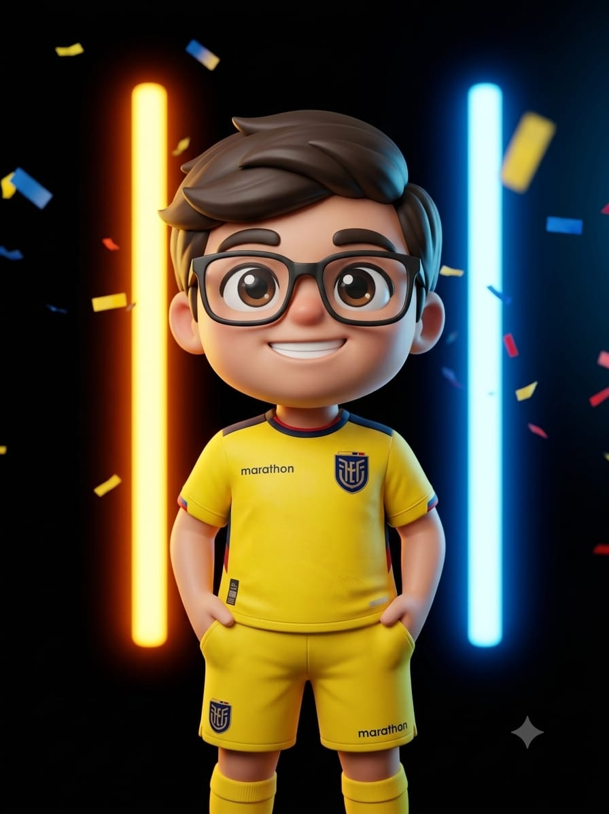

Sobre el proyecto
SuperCampeones es un proyecto web académico inspirado en el Mundial de Fútbol. Fue desarrollado con el objetivo de practicar la creación de páginas web usando HTML, CSS y JavaScript, además de fortalecer el trabajo colaborativo mediante GitHub.
Cada integrante del equipo tiene asignado un grupo mundialista diferente. De esta manera, el proyecto se organiza por secciones y cada miembro aporta con información, diseño y contenido relacionado con su grupo correspondiente.
Objetivo del taller
El objetivo principal del taller es aprender a trabajar de forma colaborativa en un repositorio compartido, utilizando ramas, commits y una estructura ordenada de archivos.
Además, se busca crear una interfaz moderna, atractiva y funcional, donde los usuarios puedan navegar entre las diferentes páginas del proyecto mundialista.
Equipo de trabajo
El desarrollo se realizó de manera colaborativa por los miembros del grupo GitHub SuperCampeones. Cada integrante tiene un grupo mundialista asignado, evitando repetir grupos y permitiendo una mejor organización del proyecto.

Cynthia Cacuango
Jonathan Luna
Jhon Quintero
Johann CacuangoGrupos asignados por integrante
Para el desarrollo del proyecto, cada miembro seleccionó un grupo mundialista diferente. Esta distribución permite que el sitio web tenga mayor variedad de contenido y que cada integrante sea responsable de una sección específica.
Tecnologías utilizadas
Para la construcción del proyecto se utilizaron tecnologías base del desarrollo web: HTML para la estructura, CSS para el diseño visual, JavaScript para agregar interactividad y GitHub para gestionar el trabajo colaborativo.
Metodología de trabajo
El equipo trabajó sobre un repositorio compartido, organizando los cambios mediante ramas, actualizaciones, commits y publicaciones en GitHub. Esto permite que cada integrante pueda desarrollar su parte del proyecto sin afectar directamente el trabajo de los demás.
Antes de subir cambios, se recomienda actualizar el proyecto, agregar los archivos modificados, realizar un commit con una descripción clara y finalmente enviar los cambios al repositorio remoto.
Explora el proyecto
Desde esta página puedes volver al inicio o visitar las secciones principales del proyecto.